伯耆大山・蒜山
| 日付 | 2022年5月1日（日） - 2022年5月4日（水） | ||||
|---|---|---|---|---|---|
| 山域 | 中国の山 | ||||
| メンバー | 家族（妻、長女・11歳、長男・8歳） | ||||
| 山行形態 | 子連れ3泊4日キャンプ | ||||
| アクセス | 車、タクシー | ||||
| ルート |
|
今年のGWは3泊4日で新潟旅行に行こうと考えていたが、
初日雨予報、2,3日目の天候も不安定そうなため、急遽場所を変更。
比較的、天候が安定していそうな鳥取に向かうことにする。
コロナ2回と天候不順1回で、3年連続新潟旅行は流れている。
直前でGWのキャンプ場の予約が取れるわけはなく、
予約なしで無料の大山池野営場でキャンプを行うことにする。
1日目
大山池野営場に到着。そこそこ埋まっているが、明日は平日のため、空きスペースはある。
ここにテントを張れないと、いろんな計画が狂うため、まずは一安心。
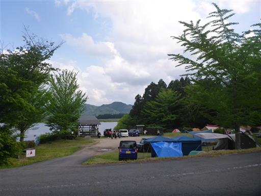
早速テントを設営。
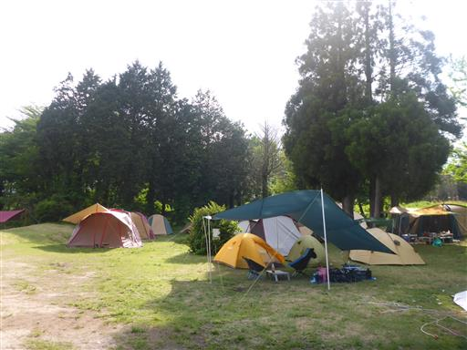
目の前は大山池。正式名称は狼谷溜池で、灌漑用に造られたものだ。
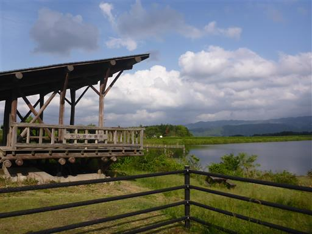
カヌーの体験をやっている。余裕があればやってみたい。
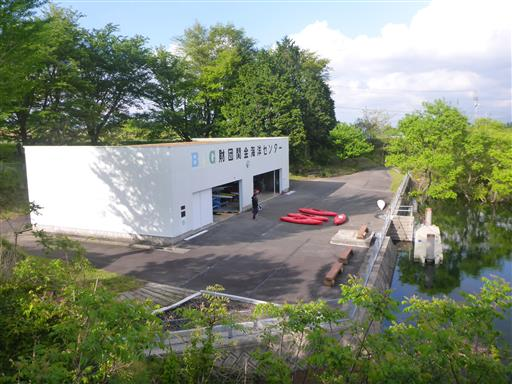
水の中に木が生えている。今は水が多いのだろうか？
水は透明度が高く、非常にきれいだ。
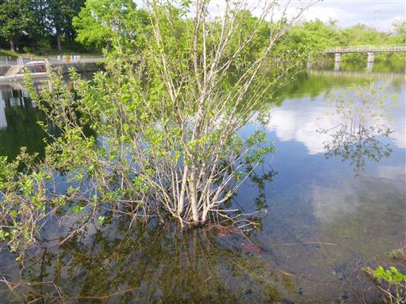
本日はずっと車に乗っていたので、体を動かすため湖を一周する。
遊歩道が整備されているが、あまり歩く人がいないのか苔が多い。
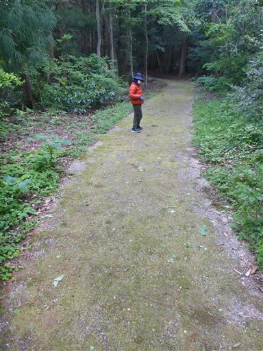
湖の端の方まで歩く。このあたりも木が水没している。
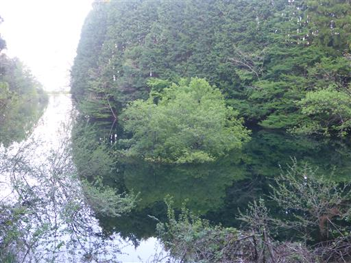
激しく水が流れ込んでいる。
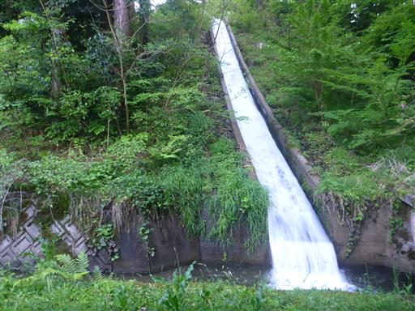
上流に何があるのかと坂を登ってみたが、あったのは何の変哲もない用水路。
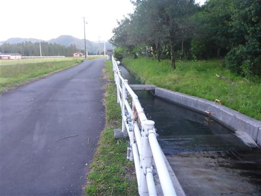
周囲は美しい風景が広がる。
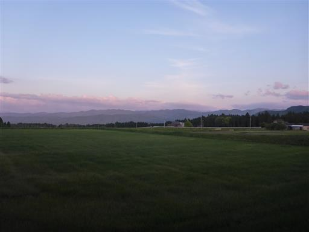
湖の西側は遊歩道が無く、田んぼの中の道を歩く。
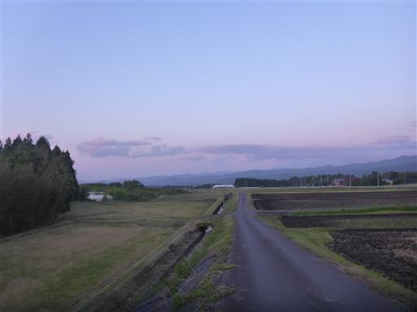
大山池の堤からの景色。真ん中左の少し雲がかかっている山が伯耆大山だ。
シルエットだと、あまり目立たない。
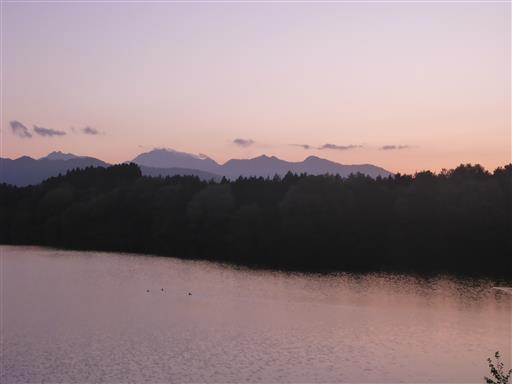
立派な碑が立っている。もう19時だがまだ空は明るい。
明日に備えて早めに寝る。
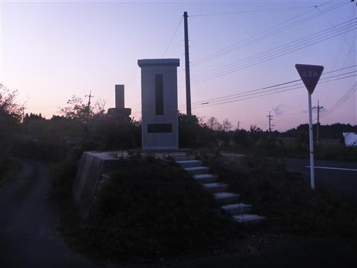